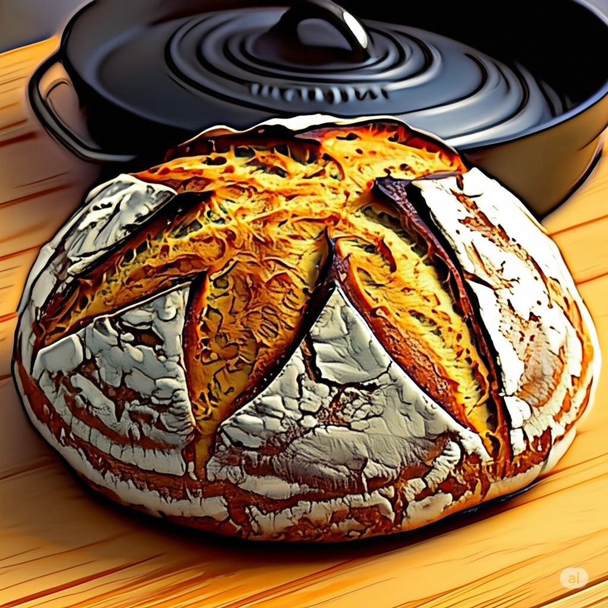

DIGITAL COOKBOOK SHOWCASING THE CAPABILITIES OF HTML
üçû Bread üçû
Crusty No-Knead

The simplest way to have fresh bread within a couple of hours. Recipe is forgiving so don’t fret if things don’t go perfectly, it will be salvageable.
2 tsp active dry yeast
2 tsp kosher salt
1½ cups very warm tap water
3 cups bread flour
Whisk yeast and salt in a large bowl with warm water.
Add in all the flour at once and stir until a sticky dough forms.
Cover with a kitchen towel and leave for 2-3 hours to rise until doubled in size.
Preheat oven to 450°F with Dutch oven inside and lid on.
Dust dough with flour and form it into a ball on parchment paper.
Lift paper and dough into Dutch oven and return to oven.
Bake 30 minutes covered, then 12 minutes uncovered.
Remove and place on cooling rack for at least 10 minutes before slicing.
Combine water, yeast, and sugar in medium bowl. Let stand until the mixture foams on top - about 5 minutes.
In the meantime, combine flour and salt. Once yeast mixture is foamy, mix it into the flour mixture.
Knead combination on floured surface, then place in lightly oiled bowl and cover with a clean cloth.
Let the dough rise - about 30 minutes - then cut the dough in half.
Use or bag each portion for later use.
Pizza Stone
Preheat oven to 500°F.
Place stone on the lowest rack for 30 minutes while preheating.
Dust stone with flour before placing pizza on stone.
Source:
üç≥ Eggs üç≥
Deviled Eggs
12 eggs
3 tsp dijon mustard
⅓ cup mayonnaise
1 tbsp butter
1 tbsp lemon juice
1 tbsp minced shallot / onion
1 tsp sugar
⅛ tsp salt
⅛ tsp pepper
¼ tsp tabasco sauce
Paprika, chives, pickle juice (for garnish/flavor)
Place eggs in a large saucepan and cover with water.
Transfer to stovetop over high heat until water begins to boil.
Boil for one minute, cover with lid, and remove from heat. Allow to sit for 17 minutes and then drain and transfer to an ice bath.
Peel eggs and set aside.
Slice each egg in half lengthwise and gently remove yolk halves into small mixing bowl. Arrange egg whites on serving platter.
Use a fork to mash the yolks together with mustard, mayonnaise, butter, lemon juice, shallot/onion, sugar, salt, pepper, and tabasco.
Add mayonnaise as necessary to get desired creamy consistency, then piping bag or spoon mixture back into egg halves.
Sprinkle with paprika and chives. Add a dash of pickle juice if desired. Let settle.
Source:
Rancheros Wrap
For Pico de Gallo:
2 medium ripe tomatoes, chopped (about 1 ½ cups)
¼ cup white onion, finely chopped
¼ cup fresh cilantro, chopped
1 lime, juiced
¼ tsp salt
For Beans:
2 tsp olive oil
¼ cup white onion, finely chopped
¼ tsp salt
1 tsp ground cumin
15 oz black or pinto beans, rinsed and drained
¼ cup water
Black pepper, to taste
½ tsp lime juice
For Salsa & Wrap:
1 tbsp extra virgin olive oil
½ medium onion, chopped (about a half cup)
15 oz whole or crushed tomatoes, preferably fire-roasted (or 1-2 large fresh vine-ripened tomatoes)
3 oz green anaheim chiles or jalapeno pepper, chopped
2 cloves garlic; 1 chopped, 1 smashed
½ tsp hot sauce
1 tsp ground cumin
1 tsp chipotle chili powder
Salt and pepper
4 large eggs
Milk (for eggs, amount not specified, optional)
4 6-inch corn tortillas, warmed
½ cup shredded Monterey Jack cheese or crumbled cotija/feta cheese
Butter
Sliced avocado
Combine pico de gallo ingredients in small bowl. Set aside.
Beans: Warm 2 tsp olive oil in a small saucepan over medium heat, then add ¼ cup finely chopped white onion and ¼ tsp salt.
Cook, stirring occasionally, until onions are turning translucent (3-6 min).
Add 1 tsp ground cumin, stirring constantly for 30 seconds, then pour in drained beans and ¼ cup water.
Stir, cover, and cook for 5 minutes. Reduce heat to low, then remove lid and mash beans.
Cook uncovered, stirring often, until thickened (2-3 min). Remove pot from heat and stir in black pepper and ½ tsp lime juice. Add salt, pepper, or lime juice to taste. Cover until ready to serve.
Salsa: Combine 15 oz tomatoes, ½ medium chopped onion, chopped chiles/jalapeno, 1 chopped garlic clove + 1 smashed garlic clove, ½ tsp hot sauce, 1 tsp ground cumin, 1 tsp chipotle chili powder, salt, and pepper in a large bowl.
Heat 1 tbsp extra virgin olive oil in a medium skillet over low heat.
Add salsa combination to skillet and fry until thickened slightly (3 min), then reduce to a simmer. Remove smashed garlic clove if desired.
Wrap Assembly: Whisk together eggs (and a splash of milk, if using) in a small bowl.
Coat one side of warmed tortillas with a layer of the prepared refried beans.
Heat and heavily butter a saucepan smaller than your tortillas.
Pour egg mixture into buttered pan and let cook uncovered, without stirring, until set.
Once egg is mostly formed, place a tortilla bean-side-down over the egg mixture. Press gently. Flip the tortilla so the egg is now on top, inside the tortilla.
Add desired toppings (salsa, cheese) onto the egg. Fold tortilla sides up to create a wrap.
Carefully flip the wrap seam-side down in the pan to help seal.
Cook for a few minutes, turning as needed, to brown the tortilla and warm contents.
Transfer to a cutting board and halve. Serve alongside avocado slices and pico de gallo.
Source:
Hard Boiled Eggs
Eggs (as many as desired)
Cold water
Place eggs in a single layer on the bottom of a pot. Ensure they are standing up on end if possible, though not critical.
Cover the eggs with cold water, so the water level is an inch or so higher than the eggs. (If any eggs float, they may be old and should be discarded).
Cover the pot with a lid and heat over high heat until the water reaches a rolling boil.
Once boiling, remove the pot from the heat and let it stand, covered, in the hot water for 9-11 minutes, depending on the size of the eggs (9 for medium, 10 for large, 11 for extra-large).
Drain the hot water and immediately run cold water over the eggs (or place them in an ice bath) until they are cooled. This stops the cooking process and makes them easier to peel.
If the shell is left on and eggs are kept in a sealed container in the refrigerator, they will last for about 1 week.
Source: User Provided
Soft Boiled Eggs
Eggs (as many as desired)
Cold water
Place eggs in a single layer on the bottom of a pot.
Cover with cold water, about an inch above the eggs.
Bring the water to a rolling boil over high heat.
Once boiling, reduce heat to a gentle simmer. Cook for:
3-4 minutes for very runny yolk and just-set white.
5-6 minutes for a runny yolk and firm white.
7-8 minutes for a jammy, mostly-set yolk.
Alternatively, for a "boil then rest" method: Bring water to a rolling boil, add eggs carefully, boil for 1 minute, then remove from heat, cover, and let stand for 5-7 minutes.
Drain hot water and immediately run cold water over eggs or place in an ice bath to stop cooking.
Serve immediately.
Source: (Standard Method, details not fully provided by user)
Scotch Eggs
A classic British picnic food, Scotch eggs consist of a hard or soft-boiled egg wrapped in sausage meat, coated in breadcrumbs, and then deep-fried or baked.
4-6 large eggs (for boiling)
1 lb (450g) good quality sausage meat (casings removed) or ground pork seasoned well
Salt and freshly ground black pepper
Optional seasonings for sausage: sage, thyme, mace, nutmeg
½ cup all-purpose flour
2 large eggs, beaten (for dredging)
1-1½ cups panko breadcrumbs (or fine dried breadcrumbs)
Vegetable oil, for frying (if frying)
Boil Eggs: Hard or soft-boil the 4-6 eggs to your preference (typically 5-7 minutes for a slightly jammy yolk). Immediately transfer to an ice bath to cool completely. Carefully peel the eggs.
Prepare Sausage: If using plain ground pork, season it well with salt, pepper, and any optional herbs/spices. Divide the sausage meat into 4-6 equal portions.
Wrap Eggs: Flatten one portion of sausage meat in your palm to a thin patty (about ¼-⅓ inch thick). Place a peeled boiled egg in the center and carefully mold the sausage meat around the egg, ensuring it's completely sealed and evenly covered. Repeat with remaining eggs and sausage.
Bread Eggs: Set up three shallow dishes: one with flour (seasoned with salt and pepper), one with the 2 beaten eggs, and one with breadcrumbs.
Roll each sausage-encased egg first in flour, then dip in the beaten egg (letting excess drip off), and finally coat thoroughly in breadcrumbs, pressing gently to adhere.
Chill (Optional but Recommended): Place the breaded Scotch eggs on a plate and chill in the refrigerator for at least 30 minutes. This helps them hold their shape during cooking.
Cook:
Frying (Traditional): Heat vegetable oil in a deep fryer or large, heavy-bottomed pot to 325-350°F (160-175°C). Carefully lower 2-3 Scotch eggs into the hot oil. Fry for 5-8 minutes, turning occasionally, until golden brown and the sausage meat is cooked through. Drain on a wire rack.
Baking: Preheat oven to 400°F (200°C). Place Scotch eggs on a baking sheet lined with parchment paper. Bake for 20-30 minutes, turning halfway, until golden brown and cooked through. They will be less crispy than fried.
Serve warm or at room temperature.
Source: (Standard Method, details not fully provided by user)
Breakfast Burrito
Eggs
Ground turkey
Cottage cheese
Tortillas (large, for burritos)
Kale, chopped
Spices: Chili powder, paprika, onion powder, garlic powder, cumin, oregano, red pepper flakes, black pepper, salt (to taste)
Oil or cooking spray
Heat a pan with a little oil or cooking spray over medium-high heat. Add ground turkey and cook, breaking it apart, until browned.
Sprinkle generously with your desired combination of spices (chili powder, paprika, onion powder, garlic powder, cumin, oregano, red pepper flakes, black pepper, salt). Stir to combine.
Once turkey is browned and seasoned, add cottage cheese to the pan. Stir and combine, allowing the cottage cheese to melt down and mix with the turkey.
Add chopped kale to the mixture. Stir and cook until the kale is wilted. Remove the turkey-kale mixture from the heat and set aside.
Return the pan to the heat (add a little more oil if needed). Cook eggs to your preference (scrambled is common for burritos).
Warm the tortillas slightly to make them pliable.
Assemble burritos: Spoon a portion of the meat/cheese/kale mixture and a portion of the cooked eggs onto each tortilla.
Fold in the sides of the tortilla, then roll up tightly from the bottom to form a burrito.
If storing for later, wrap each burrito individually in parchment paper and then tinfoil. These can be refrigerated or frozen. Reheat in oven, microwave, or air fryer.
4 lbs Yukon Gold or Russet potatoes, peeled and cut into chunks
5 tbsp olive oil or animal fat
Small handful chopped fresh rosemary leaves
3 cloves garlic, minced
Black pepper
Small handful minced fresh parsley leaves
Preheat oven to 450°F.
Boil water in a large pot, then add salt, baking soda and potatoes.
Return to boil, reduce heat and simmer for 10 minutes or until potatoes are easily pierced with a knife.
In a saucepan, combine oil/fat, rosemary, garlic and pepper. Cook over medium heat, stirring constantly, until garlic is golden (about 3 minutes).
Strain oil through a fine mesh into a large bowl, retaining both parts (herbs/garlic solids and infused oil).
Drain potatoes well and let rest in the pot for a minute for moisture to evaporate.
Transfer potatoes to the large bowl with the infused oil, season with salt and pepper, and shake roughly to coat and create a thick starchy paste on the chunks.
Spread potatoes evenly on a baking sheet and roast undisturbed for 20 minutes.
Remove from oven, turn potatoes with a thin spatula and continue roasting for 30-35 minutes, turning and shaking occasionally, until deeply golden and crisp.
Transfer potatoes to a serving bowl, add the reserved herbs/garlic solids and fresh parsley. Toss to coat and serve immediately.
Source:
Potato Salad
1½ cups yellow potatoes, cubed
2 tsp salt
1 tbsp Dijon mustard
2 tbsp mayonnaise
1 cup chopped snap peas or green beans
2 green onions, chopped
Fresh dill, chopped (to taste)
Black pepper (to taste)
Cover potatoes with water in a large pot, add salt.
Cover and bring to a boil over high heat, then reduce to medium and simmer uncovered until fork-tender (10-12 minutes).
Drain potatoes and return to pot (off heat).
Add mustard, mayonnaise, snap peas/green beans, green onions and dill. Season with pepper.
Stir to coat and combine. Serve warm or chilled.
Source:
Potato Dauphinoise
1 tbsp unsalted butter
2+ cups Gruyère cheese, grated
2½ lbs Yukon Gold potatoes, peeled
3 cloves garlic, minced
2 cups warmed heavy cream
2 cups whole milk
1 tsp kosher salt
1 tsp freshly ground black pepper
½ tsp ground nutmeg
2 dried bay leaves
1 tsp fresh thyme leaves
Preheat oven to 350°F with rack in the middle.
Coat a 4-quart baking dish with butter.
Slice potatoes into ¼-inch thick rounds and place in a large pot.
Add garlic, cream, milk, salt, pepper, nutmeg and bay leaves. Simmer over medium heat, stirring often, until potatoes are fork-tender (5-7 minutes).
Remove bay leaves.
Transfer half the potatoes to the baking dish, arranging in an even layer. Top with half the grated cheese.
Arrange remaining potatoes on top, then pour enough cream mixture to reach just below the top layer.
Top with remaining cheese and bake until golden-brown and easily pierced (about 45 minutes).
Garnish with thyme and let rest 15 minutes on a wire rack before serving.
Source:
Baked Fries
1 1/2 lb potatoes
3 tbsp oil
Fresh Parsley, chopped
1 tsp Kosher Salt
1/4 tsp Pepper
1 tsp Garlic Powder
1/2 tsp Dill Weed
1/4 tsp Onion Powder
1/2 tsp Parmesan Cheese
Optional: Cayenne / Chili Powder / Mustard Powder (to taste)
Preheat oven to 425°F (220°C).
Wash and cut potatoes into fry shapes (e.g., ¼ to ½ inch thick). For crispier fries, soak in cold water for at least 30 minutes, then drain and pat thoroughly dry with paper towels.
In a large bowl, toss potatoes with oil until evenly coated.
Spread potatoes in a single layer on a large baking sheet (or two if necessary to avoid overcrowding).
Bake for 20-30 minutes, flipping halfway through, until golden brown and crispy. Cooking time will vary based on thickness.
While fries are baking, combine fresh parsley, Kosher salt, pepper, garlic powder, dill weed, onion powder, and Parmesan cheese in a small bowl. Add any optional spices if desired.
Once fries are cooked, immediately transfer them to a large bowl, sprinkle with the seasoning mixture, and toss to coat evenly.
In a large pot, melt the remaining 4 tbsp of butter. Whisk in flour and cook over medium heat for 3-4 minutes, stirring constantly, to create a thick roux.
Slowly whisk in chicken stock, ensuring no lumps form. Then, slowly whisk in warmed cream.
Simmer over low heat for 15-20 minutes to thicken, whisking occasionally and incorporating any skin that forms on top.
Simmer for 20-25 minutes, or until vegetables are tender, whisking occasionally.
Remove from heat. Stir in grated cheddar cheese until fully melted and smooth, about 1 minute.
Serve hot.
Source:
Golden Chicken Noodle
2 tbsp canola oil
1 medium onion, finely chopped
2 tbsp ginger, minced
8 garlic cloves, thinly sliced
1 bunch scallions, thinly sliced and separated by color (whites and greens)
1 tsp turmeric
½ tsp ground black pepper
6 cups water
1 bay leaf
Sea salt to taste
2 skin-on, bone-in chicken breasts
¼ lb thin round rice noodles, broken into inch-long pieces
4 stalks celery, chopped
⅓ cup fresh dill, finely chopped
Heat oil in a large Dutch oven or pot over medium-high heat.
Add onion, ginger, garlic, and scallion whites. Cook until softened, about 3 minutes.
Add turmeric and black pepper, stirring until fragrant, about 30 seconds.
Add water and bay leaf, lightly seasoning with sea salt.
Bring to a simmer, then add chicken breasts and reduce heat to low.
Cover and cook until chicken is cooked through, about 20 minutes.
Transfer chicken to a cutting board and let rest until cool enough to handle.
Remove and discard skin and bones, then shred the meat into bite-sized pieces.
Raise heat under the pot to medium and add noodles.
Cook uncovered, stirring occasionally, until noodles are springy but still slightly firm, about 8 minutes (or according to package directions).
Return shredded chicken to the pot along with chopped celery. Cook until celery is bright green and tender-crisp, and noodles are fully cooked, about 4 minutes more.
Remove from heat and stir in chopped dill and half the scallion greens.
Serve hot, garnished with remaining scallion greens on top.
Source:
Golden Get-Well Soup
Serves 4 to 6.
You couldn't pack more health-inducing goodness into this chicken soup if you tried. It's teeming with all of the restorative properties of ginger and turmeric and thickened with white rice, which swells as it cooks and turns a watery broth into a hearty, comforting porridge. This is exactly what you need when what you need is to get well. Rice acts as a thickening agent when cooked this way, thanks to its naturally occurring starch, so be sure to simmer the soup until the grains of rice are no longer distinct from the broth they cook in—and the whole thing turns rich and cozy.
2 tablespoons extra-virgin olive oil, plus more for drizzling
1 1/4 teaspoons ground turmeric
1 tablespoon Kosher salt (plus more to taste)
3/4 cup jasmine or basmati rice
9 cups water
1 teaspoon freshly ground black pepper (plus more for garnish)
Cilantro leaves and tender stems (for garnish)
Do some prep:
Thinly slice 10 scallions crosswise, setting aside about ½ cup of the dark green parts for serving.
Lightly smash and peel 10 garlic cloves.
Thinly slice 1 (4-inch) piece of ginger lengthwise into planks. No need to peel it! Just give it a scrub with some water if it looks dirty.
Start the soup:
Heat 2 tablespoons olive oil in a large Dutch oven over medium heat. Add the scallions (white and light green parts), garlic, ginger, and 1 1/4 teaspoons turmeric. Cook, stirring often, until the aromatics are softened and fragrant but not browned, 3 to 4 minutes.
Add 1 1/2 pounds bone-in, skin-on chicken thighs, 1 tablespoon salt, 9 cups water, and 3/4 cup jasmine rice to the pot. (Note: In most cases, it's best to first rinse the rice to remove any excess starch that would cause the rice to stick together as it cooks, but since we're aiming for thickened porridge, there's no need to rinse it.) Bring the water to a simmer over medium-high heat. Cook, scraping the bottom of the pot if the rice is sticking and reducing the heat as necessary to maintain a simmer, until the rice breaks down and thickens the soup to a porridge-like consistency, 40 to 50 minutes.
Shred the chicken:
Using tongs, pluck out the chicken and transfer it to a plate to cool.
While the chicken cools, use a wooden spoon to fish around for the garlic cloves, which at this point will be very, very soft. Use the back of the spoon to smash the garlic against the inside walls of the pot to crush and incorporate it into the soup. If you feel like it, you can pluck out and discard the sliced ginger at this point as well—it’s a little tough to eat, but I usually just eat around it.
Once the chicken has cooled, remove and discard the skin. Use two forks to shred the meat from the bones. Discard the bones. Return the shredded meat to the pot and give it a stir.
Season the soup and serve:
Squeeze the juice of 2 limes into the soup.
Stir in 1 teaspoon black pepper. Taste the soup and add more salt if you think it needs it.
Divide the soup among soup bowls. Garnish it with the reserved sliced scallion greens, some cilantro leaves, a good crank of black pepper, and an additional drizzle of olive oil.
Source:
If you've never dipped your spoon into the vast world of grain-thickened porridges, don't stop here. There are many versions, both sweet and savory, that span the globe, from rice-based Asian congee and its many variants throughout the continent to Italian polenta, Jamaican hominy porridge, and hot cereal faves like oatmeal. Though each is distinct, what they collectively share is an ability to comfort and soothe.
Chicken Tortellini
1 lb boneless/skinless chicken thigh
1 tsp salt
½ tsp pepper
1 yellow onion, diced
2 cloves of garlic, minced
3 tbsp olive oil
⅓ cup all-purpose flour
1 tbsp dried basil
2 tbsp tomato paste
4 cups chicken broth
28 oz can diced tomatoes
4 cups tortellini (fresh or frozen)
3 cups spinach
½ cup parmesan cheese, grated
1 cup cream, warmed
(NOTE: If planning for leftovers, prepare tortellini separately and add to individual bowls to prevent sogginess.)
Season chicken with salt and pepper and let refrigerate while preparing other ingredients.
In a skillet, heat olive oil. Fry onions and garlic until translucent. Stir in flour, basil, and tomato paste; cook for 1 minute. Transfer this mixture to the slow cooker.
Stir chicken broth, diced tomatoes, and seasoned chicken into the slow cooker.
Cover and cook on LOW for 4-6 hours, or HIGH for 3-4 hours, until chicken is tender.
Remove chicken from slow cooker and shred. Return shredded chicken to the slow cooker.
Stir in tortellini, parmesan cheese, and warmed cream.
Cook on HIGH for 10 more minutes, or until tortellini are cooked through (according to package directions if different). Add spinach during the last few minutes of cooking, just until wilted.
Serve hot.
Source:
Butternut Squash Soup (Vegan)
2 tbsp extra-virgin olive oil
1 large yellow onion, chopped
½ tsp sea salt
1 (3 lb) butternut squash, peeled, seeded, cubed
3 garlic cloves, chopped
1 tbsp fresh sage, chopped
½ tbsp fresh rosemary, minced
1 tsp fresh ginger, grated
3 to 4 cups vegetable broth
Freshly ground black pepper, to taste
Chopped parsley (optional, for serving)
Toasted pepitas (pumpkin seeds) (optional, for serving)
Add squash: Stir in cubed butternut squash and cook for 8–10 minutes, stirring occasionally, until it begins to soften and lightly caramelize.
Add aromatics: Add chopped garlic, sage, rosemary, and grated ginger. Cook for 30 seconds to 1 minute more, until fragrant.
Simmer: Pour in 3 cups of vegetable broth. Bring to a boil, then reduce heat, cover, and simmer for 20–30 minutes, or until the squash is very tender.
Blend: Let the soup cool slightly. Carefully transfer in batches to a blender and blend until smooth and creamy (or use an immersion blender directly in the pot). Add more broth if needed to reach your desired consistency.
Serve: Taste and adjust seasoning with salt and pepper if necessary. Ladle into bowls and garnish with chopped parsley and toasted pepitas, if using. Serve with crusty bread on the side.
This ratatouille recipe is a favorite way to make the classic French stew. It's rich and flavorful, filled with late summer vegetables like eggplant, tomatoes, peppers, and zucchini. Serve it warm or at room temperature with a drizzle of olive oil on top and crusty bread on the side.
1 medium-large eggplant, 1 pound, cut into ½-inch pieces
Sea salt
6 tablespoons extra-virgin olive oil, plus more as needed
2 medium zucchini, 1 pound, cut into ½-inch pieces
1 medium yellow onion, chopped
1 red or yellow bell pepper, stemmed, seeded, and cut into ½-inch pieces
3 garlic cloves, chopped
1 pound tomatoes on the vine, 3 to 5, cut into ½-inch pieces
Pinch red pepper flakes
Pinch cane sugar
1 tablespoon white wine vinegar
2 teaspoons chopped fresh thyme leaves
Freshly ground black pepper
¼ cup thinly sliced fresh basil leaves, plus more torn basil for garnish
Place the eggplant in a colander and sprinkle with ½ teaspoon salt. Place in the sink or over a large rimmed plate and set aside for 20 minutes to drain. Blot dry with a clean kitchen towel or paper towels.
Heat 3 tablespoons of the olive oil in a large skillet over medium heat. Add the eggplant and cook, stirring occasionally, for 10 to 15 minutes, or until tender. Transfer to a large bowl and set aside.
Add another 1 tablespoon olive oil and the zucchini to the skillet. Cook, stirring occasionally, for 3 to 5 minutes, or until the zucchini is tender but not mushy. Season with ¼ teaspoon salt and transfer to the bowl with the eggplant.
Add another 1 tablespoon olive oil to the pan. Add the onion and pepper and cook for 5 minutes, stirring occasionally, or until softened. Stir in the garlic and ¼ teaspoon salt and cook for another 10 minutes, or until very tender. If the pan becomes dry, add more oil as needed.
Stir the remaining 1 tablespoon olive oil into the peppers and onions. Add the tomatoes, red pepper flakes, and sugar and cook for 8 to 10 minutes, or until the tomatoes break down.
Add the eggplant and zucchini back into the skillet along with the vinegar, thyme, ¼ teaspoon salt, and several grinds of pepper. Cook, stirring occasionally, for 10 to 15 minutes, or until the ratatouille is thick. Stir in the basil and season to taste. Garnish with more basil and serve.
Add garlic, cooking until fragrant (about 1 minute).
Add chopped asparagus, seasoning with salt and pepper. Cook until asparagus is tender-crisp and bright green (about 5 minutes).
Add chicken broth and bring to a simmer. Cover and cook until asparagus is very tender (10-15 minutes).
Carefully transfer the soup mixture to a blender (venting if hot to release steam) or use an immersion blender directly in the pot to puree until smooth.
Return the pureed soup to the pot if using a countertop blender. Stir in the warmed heavy cream.
Heat gently on low. Do not allow it to boil after adding cream.
Season with additional salt and pepper to taste.
Serve hot, garnished with fresh chives or dill, if desired.
Source:
ü•ó Salad ü•ó
Coleslaw
4 tsp vinegar (e.g., white or apple cider)
¼ cup granulated sugar
¼ tsp dry mustard
¼ tsp salt
1 cup mayonnaise
2½ cups shredded cabbage (chopped to ⅛ inch, about 1 small head)
¼ cup finely chopped carrots
In a medium bowl, whisk vinegar, sugar, dry mustard, and salt until sugar dissolves.
Add mayonnaise and whisk to combine thoroughly.
Add shredded cabbage and finely chopped carrots to the dressing. Mix until well combined and all vegetables are coated.
Cover and refrigerate for at least 2 hours before serving to allow flavors to meld. Stir again before serving.
Source: (Chick-fil-A style, from previous data)
Kimchi
10 lbs baechu (napa cabbage)
1 cup kosher salt
For Porridge:
½ cup sweet rice flour
¼ cup granulated sugar
3 cups water
For Paste:
1 cup crushed garlic
1-2 tbsp minced ginger
1 cup minced onion
1 cup fish sauce
Salty, fermented squid (optional, amount as per FAQ/preference)
2½ cups Korean hot pepper flakes (gochugaru), adjust to taste
2 cups chopped leek
10 green onions (diagonally sliced)
¼ cup julienned carrot
2 cups julienned Korean radish
Prepare Cabbage: Trim discolored outer leaves from napa cabbage. Cut cabbage lengthwise into quarters, remove cores, and chop into bite-sized pieces.
Soak cabbage pieces in cold water, then drain and place into a large basin. Sprinkle with 1 cup kosher salt, tossing to distribute.
Turn cabbage every 30 minutes for a total of 1½ hours to ensure even salting.
Rinse the cabbage thoroughly in cold water 3 times to remove excess salt. Drain well and set aside.
Make Porridge: In a pot, combine 3 cups water and ½ cup sweet rice flour. Mix well and bring to a boil, stirring constantly. Once it bubbles (about 5 minutes), add ¼ cup sugar. Stir and cook for a few more minutes until translucent. Let it cool down completely.
Make Kimchi Paste: Place the cooled porridge into a very large mixing bowl. Add fish sauce, hot pepper flakes (gochugaru), crushed garlic, minced ginger, and minced onion. If using, add chopped salty fermented squid. Mix well.
Add chopped leek, diagonally sliced green onions, julienned carrot, and julienned Korean radish to the paste. Mix all ingredients thoroughly.
Combine: Add the drained, salted cabbage to the kimchi paste in the large basin. Mix by hand (preferably wearing gloves) until the cabbage is evenly coated with the paste. If your basin isn't large enough, do this in batches.
Store & Ferment: Transfer the kimchi to an airtight container or glass jars, pressing down to remove air pockets.
You can eat it fresh immediately, or allow it to ferment. For fermentation, you can leave it at room temperature for 1-2 days (taste daily) until it reaches your desired sourness, then refrigerate to slow down fermentation. Alternatively, refrigerate immediately for slower fermentation.
1 pound red-skinned potatoes, sliced 1/3 inch thick
Kosher salt
2 tablespoons dry white wine
10 ounces haricots verts or thin green beans, trimmed
4 large eggs
1/4 cup white wine vinegar
1/2 shallot, minced (about 2 tablespoons)
2 tablespoons dijon mustard
1 tablespoon chopped fresh thyme
Freshly ground pepper
3/4 cup extra-virgin olive oil
8 cherry tomatoes or small cocktail tomatoes, halved or quartered
1 head Boston lettuce, leaves separated
6 radishes, trimmed and quartered
2 5 1/2-ounce cans Italian or Spanish tuna packed in olive oil, drained
1/2 cup nicoise olives
Put the potatoes in a medium saucepan; cover with cold water and season with salt. Bring to a simmer over medium-high heat and cook until fork-tender, about 5 minutes. Drain and transfer to a medium bowl; drizzle with the wine and let cool. Reserve the saucepan.
Meanwhile, bring a separate saucepan of salted water to a boil. Fill a bowl with salted ice water. Add the haricots verts to the boiling water; cook until crisp-tender and bright green, 2 to 4 minutes. Drain and immediately plunge into the ice water to cool; drain and pat dry.
Place the eggs in the reserved saucepan and cover with cold water by about 1 inch. Bring to a simmer over medium-high heat, then cover, remove from the heat and let stand, 10 to 12 minutes. Drain, then run under cold water to cool. Peel under cold running water.
Make the dressing: Whisk the vinegar, shallot, mustard, thyme, 1/2 teaspoon salt, and pepper to taste in a bowl. Whisk in the olive oil in a slow, steady stream until emulsified.
Toss the tomatoes in a small bowl with salt and pepper to taste. Add about 1/4 cup dressing to the potatoes and toss. Quarter the hard-cooked eggs.
Divide the lettuce among 4 plates. Arrange the potatoes, haricots verts, radishes, hard-cooked eggs and tuna on top. Pour any juices from the tomatoes into the dressing, then add the tomatoes to the plates. Drizzle with the dressing and top with the olives.
Cook pasta according to package directions. Drain and set aside.
While pasta cooks, heat olive oil in a large skillet over medium heat. Add garlic and cook until fragrant (about 1 minute).
Stir in diced tomatoes (undrained), dried basil, salt, and pepper. Bring to a simmer, then reduce heat and cook for 5-7 minutes, stirring occasionally, allowing the sauce to thicken slightly.
Add cooked pasta to the sauce and toss to coat.
Serve immediately, topped with Parmesan cheese if desired.
Preheat the oven to 400°F. In a baking dish, toss the tomatoes with the olive oil and place the feta in the middle, turning it to coat it in oil. Season everything with salt and pepper and bake for 30 minutes.
After 30 minutes, turn the heat up to 450°F and roast until the feta is golden brown, about 10-15 minutes.
While the feta is baking, cook the pasta according to the package directions. Reserve 1-2 cups of the pasta water, then drain well.
When the feta and tomatoes are done, remove from the oven and immediately add the crushed garlic and crushed red pepper flakes, if using. Stir everything together until the tomatoes and feta combine into a creamy sauce.
Stir in the drained pasta until well coated and creamy, adding in a bit of pasta water to loosen if the sauce is too thick.
Taste and season with salt and pepper. Stir in some chopped basil and finish with crushed red pepper. Enjoy!
Whisk heavy cream, egg yolks, parmesan cheese, and lemon zest in a bowl. Season with salt and pepper. Set aside.
Bring a large pot of salted water to a boil. Add fettucine and cook according to package directions until al dente.
Before draining, reserve about 1 cup of the pasta cooking water. Drain the pasta and return it to the pot (off heat).
Immediately pour the egg and cheese mixture over the hot pasta. Toss or stir quickly and continuously to combine. The heat from the pasta will cook the eggs and melt the cheese. Add a splash of the reserved pasta water at a time, as needed, to create a smooth, creamy sauce that coats the pasta.
Stir in the lemon juice. If using Brie, add it now and stir until melted and incorporated.
Taste and adjust seasoning with more salt, pepper, or lemon juice if needed.
Serve immediately, garnished with additional grated parmesan cheese.
Source:
Spaghetti Bolognese
1 1/2 tbsp olive oil
2 garlic cloves, minced
1 onion, finely chopped (brown, yellow or white)
1 lb / 500g beef mince (ground beef), or half pork and half beef
1/2 cup (125 ml) dry red wine (can substitute with water or beef broth/stock)
Finely chopped fresh parsley, for garnish (optional)
Heat olive oil in a large pot or deep skillet over medium-high heat. Add onion and garlic; cook for 3 minutes, or until light golden and softened.
Increase heat to high and add beef mince. Cook, breaking it up with a spoon, until browned.
Pour in red wine. Bring to a simmer and cook for 1 minute, scraping any browned bits from the bottom of the pot, until the alcohol smell has evaporated.
Stir in crushed tomatoes, tomato paste, crumbled beef bouillon cubes, sugar (if needed), Worcestershire sauce, bay leaves, thyme, cooking salt, and black pepper.
Bring the sauce to a gentle simmer, then reduce heat to medium-low. Cook uncovered for at least 20–30 minutes (or up to 1 hour for deeper flavor), stirring occasionally. If the sauce becomes too thick, add a splash of water. (Optional richer sauce: Add 3/4 cup of water, cover, and simmer on very low for 2–2.5 hours, stirring every 30 minutes. Uncover and simmer for another 20 minutes to thicken.)
Taste the sauce and adjust seasoning if necessary (more salt, pepper, or sugar). Remove bay leaves and thyme sprigs (if fresh sprigs were used).
While the sauce simmers, cook spaghetti according to package directions until al dente. Drain well.
Serve the bolognese sauce over the cooked spaghetti. Garnish with Parmesan cheese and fresh parsley, if desired.
(Optional "Restaurant Style" Tossing Method): After draining spaghetti (reserve 1 cup of pasta water), add the pasta directly to the pot with the bolognese sauce. Add about 1/2 cup of the reserved pasta water. Toss gently over medium heat for 1-2 minutes, until the spaghetti is well-coated and the sauce has emulsified. Serve immediately, garnished as desired.
Preheat the oven to 350°F (175°C). Grease a 9x13-inch baking dish.
Cook cavatappi according to package directions until al dente. Drain and set aside.
In a large bowl, combine the grated mozzarella, Colby Jack, and Cheddar cheeses. Divide this mixture in half; set one half aside for layering and topping.
In a small bowl, combine the garlic powder, smoked paprika, salt, and pepper. Divide this seasoning mixture in half and set aside.
Melt butter in a large skillet or saucepan over medium heat.
Once melted, stir in half of the seasoning mixture and the flour. Cook, stirring constantly, for 3 to 5 minutes to form a smooth paste (roux).
Gradually whisk in the evaporated milk until the sauce begins to thicken.
Stir in the heavy cream and the remaining half of the seasoning mixture. Mix until well combined.
Whisk in the Dijon mustard until the sauce is thick and smooth.
Reduce heat to low. Add one half of the total cheese mixture (the portion *not* set aside for layering) to the sauce, a handful at a time, stirring until each addition is melted before adding the next, creating a smooth cheese sauce.
Add the cooked cavatappi to the cheese sauce and stir until well coated.
Spread half of the macaroni and cheese mixture into the prepared baking dish.
Sprinkle half of the reserved shredded cheese (the portion set aside in step 3) over the macaroni layer.
Top with the remaining macaroni and cheese mixture.
Sprinkle the remaining reserved shredded cheese over the top.
Bake in the preheated oven for 25 to 30 minutes, or until the cheese is melted and bubbly.
For a golden-brown top, switch the oven to broil and broil for about 2 minutes, watching carefully to prevent burning. Let cool slightly before serving.
    Source: https://www.allrecipes.com/tini-viral-macaroni-and-cheese-8409676 or better yet https://www.tiktok.com/@tinekeyounger
ü•° Sides ü•°
Spice Rice
1 tbsp olive oil
1 small onion, diced
1 small red pepper, diced
½ tsp chili flakes
2 tsp turmeric
1 tsp cumin
1 tsp paprika
2½ cups chicken stock
½ cup frozen peas
1½ cups long-grain rice (e.g. Basmati or Jasmine)
Heat olive oil in a large saucepan or pot with a lid over medium heat.
Add diced onion and red pepper. Cook, stirring constantly, until tender (about 5-7 minutes).
Add chili flakes, turmeric, cumin, and paprika. Stir and cook for 1 minute more until fragrant.
Add chicken stock and rice. Bring the mixture to a boil.
Once boiling, cover the pot with a lid, reduce heat to low, and cook for 7 minutes.
Stir the rice, then add the frozen peas. Re-cover and continue cooking for another 7 minutes, or until all liquid is absorbed and rice is tender. Stir occasionally if needed to prevent sticking.
Uncover, fluff with a fork, and serve hot.
Source: (Nando's style, from previous data)
Pico de Gallo
1 lb tomatoes (3-4 medium), diced
½ medium onion (1 cup chopped), white or red
1 jalapeno pepper, seeded and finely minced (optional, adjust to heat preference)
½ cup chopped cilantro
2 tbsp lime juice (from 1 fresh lime)
½ tsp salt (or to taste)
⅛ tsp black pepper
In a medium bowl, combine diced tomatoes, chopped onion, minced jalapeno pepper (if using), and chopped cilantro.
Stir in fresh lime juice.
Season with ½ tsp salt and ⅛ tsp black pepper. Stir gently to combine.
Taste and adjust seasoning if necessary (more salt, lime juice, or jalapeno).
Enjoy immediately or cover and refrigerate for at least 30 minutes (or overnight) to allow flavors to meld.
Source:
Pineapple Guacamole
4 discs fresh pineapple, cored (about ½ inch thick)
For Pineapple Glaze:
1 lime, juiced (reserve some for guacamole)
3 tbsp brown sugar
1 tbsp honey
1½ tsp chili powder (for glaze)
For Guacamole:
4 ripe avocados, peeled and pitted
Remaining lime juice
1½ cups finely chopped red onion
½ cup diced tomato
1 minced jalapeño (seeds removed for less heat)
1 clove minced garlic
½ tsp coarse sea salt or kosher salt
¼ cup finely chopped fresh cilantro leaves
Dash of cumin
1 tsp chili powder (for garnish, optional)
Oil for grill/pan
Prepare Pineapple: Combine juice of one lime (or part of it, reserving some for guac), brown sugar, honey, and 1½ tsp chili powder in a bowl to make the glaze.
Heat a grill pan or outdoor grill to medium-high heat. Lightly oil the grates/pan.
Brush pineapple discs with the glaze. Cook for 3-4 minutes per side, or until lightly charred and caramelized, basting with excess glaze occasionally.
Remove pineapple from heat and let cool, then dice into small pieces.
Make Guacamole: In a large bowl, mash avocados to desired consistency (chunky or smooth). Stir in the remaining lime juice.
Add diced red onion, diced tomato, minced jalapeño, minced garlic, coarse salt, chopped cilantro, and a dash of cumin. Mix thoroughly.
Gently fold in the charred, diced pineapple.
Transfer to a serving bowl. If desired, sprinkle the top with the additional 1 tsp chili powder for garnish.
Serve immediately with tortilla chips.
Source:
Enchiladas
1 tbsp olive oil
1 red onion, chopped
2 cloves garlic, minced
30 oz canned black beans, drained and rinsed
1 medium tomato, diced
4 oz canned chopped green chilies, undrained (e.g., one small can)
1 tbsp chili powder
1 tsp cumin
2 tbsp soy sauce
1 cup corn (frozen or canned, drained)
8-10 tortillas (corn or flour)
1 can (approx. 15 oz) refried beans
1 cup enchilada sauce
4 oz (1 cup) shredded cheese (e.g., cheddar, Monterey Jack)
Salt and pepper (to taste)
Preheat oven to 375°F. Lightly grease a 9x13 inch baking dish.
Heat olive oil in a large skillet over medium heat.
Add chopped red onion and garlic; cook for about 5 minutes, until softened.
Add drained black beans, diced tomato, undrained green chilies, chili powder, cumin, and soy sauce. Stir to combine and bring to a simmer.
Lower heat, cover, and simmer for 10 minutes.
Stir in corn. Uncover and simmer for 5 minutes more, allowing some liquid to evaporate.
Season the bean mixture with salt and pepper to taste.
Warm tortillas slightly to make them pliable. Spread a thin layer of refried beans on one side of each tortilla.
Spoon some of the bean and vegetable mixture down the center of each tortilla. Roll them up and place seam-down in the prepared baking dish.
Pour enchilada sauce evenly over the rolled tortillas. Sprinkle with shredded cheese.
Bake for 20 minutes, or until heated through and cheese is melted and bubbly. Let stand for a few minutes before serving.
Source:
üêì Chicken üêì
Chicken Parmesan
Marinara Sauce:
3 tbsp extra-virgin olive oil
1 small yellow onion, finely chopped
6 cloves garlic, finely chopped
1 (28-oz) can crushed tomatoes
2 large sprigs basil
Kosher salt
Freshly ground black pepper
Chicken:
1 c panko bread crumbs
1 tsp garlic powder
1 c finely grated Parmesan (for breading) + 1 c finely grated Parmesan (for topping), divided
Marinara Sauce: Heat olive oil in a pot over medium heat. Add onion and cook until softened, about 5 minutes. Stir in garlic, reduce heat to low. Cover and cook, stirring occasionally, for 10 minutes. Uncover and cook another 5 minutes, until very soft. Stir in crushed tomatoes and basil sprigs. Bring to a boil, then reduce heat and simmer for about 30 minutes, or until sauce has thickened. Discard basil sprigs. Season with salt and pepper to taste.
Chicken: Preheat broiler. Set a wire rack on a baking sheet.
Prepare dredging stations:
In a shallow dish: flour.
In another shallow dish: whisk eggs with 1 tbsp water.
In a third shallow dish: combine panko bread crumbs, 1 tsp garlic powder, and 1 cup grated Parmesan.
In a separate bowl: combine shredded mozzarella and the remaining 1 cup grated Parmesan for topping.
If chicken cutlets are uneven, pound them to an even 1/4" thickness. Pat chicken dry and season with Kosher salt and freshly ground black pepper on both sides.
Dip each chicken cutlet first into flour (shaking off excess), then into the egg mixture (letting excess drip off), and finally into the panko-Parmesan mixture, pressing gently to adhere.
In a large, heavy-bottomed skillet, heat vegetable or canola oil over medium-high heat until it reaches 350°F or shimmers. (About 1/2 inch of oil).
Working in batches, fry chicken for 1-2 minutes per side, until golden brown and cooked through. Do not overcrowd the pan.
Transfer cooked chicken to the prepared wire rack. Repeat with remaining chicken.
Spoon a generous amount of marinara sauce over each chicken cutlet. Sprinkle with the mozzarella-Parmesan cheese mixture.
Broil until cheese is melted, bubbly, and has some golden brown spots, about 2-3 minutes. Watch carefully to prevent burning.
Top with chopped fresh basil and serve immediately, with extra marinara sauce on the side if desired.
Source:
Chicken Pot Pie
Yields 8 servings
1 pound skinless, boneless chicken breast halves - cubed
1 cup sliced carrots
1 cup frozen green peas
½ cup sliced celery
⅓ cup butter
⅓ cup chopped onion
⅓ cup all-purpose flour
½ teaspoon salt
¼ teaspoon black pepper
¼ teaspoon celery seed
1 ¾ cups chicken broth
⅔ cup milk
2 (9-inch) unbaked pie crusts (store-bought or homemade)
Gather all ingredients. Preheat the oven to 425°F (220°C).
In a saucepan, combine cubed chicken, sliced carrots, frozen peas, and sliced celery. Add water to cover and bring to a boil. Boil for 15 minutes, then remove from the heat and drain. Set aside.
While chicken and vegetables are cooking, melt butter in another saucepan over medium heat. Add chopped onion and cook until soft and translucent, about 5-7 minutes.
Stir in flour, salt, pepper, and celery seed. Cook for 1 minute, stirring constantly.
Slowly stir in chicken broth and milk.
Reduce heat to medium-low and simmer, stirring frequently, until the sauce has thickened, about 5-10 minutes. Remove from heat.
Place one unbaked pie crust in the bottom of a 9-inch pie plate.
Add the cooked chicken and vegetable mixture to the bottom pie crust. Pour the hot broth mixture over the chicken and vegetables.
Cover with the top crust. Seal the edges by crimping them together. Cut away any excess dough. Make several small slits in the top crust to allow steam to escape.
Bake in the preheated oven until the pastry is golden brown and the filling is bubbly, about 30-35 minutes.
Prepare Sauce: Stir fish sauce, oyster sauce, soy sauce, water, and brown sugar in a small bowl until sugar is dissolved. Set aside.
Cook Chicken: Heat 3 tbsp of oil in a large skillet or wok over high heat until shimmering. Add ground chicken and cook, breaking up the meat with a spoon, until liquid has evaporated and chicken is starting to brown, about 5-7 minutes.
Reduce heat to medium. Add minced garlic and chopped chilies (bird's-eye and long red). Cook for 30 seconds, stirring constantly, until fragrant.
Add green beans and the prepared fish sauce mixture. Stir constantly until the sauce coats the chicken and green beans are tender-crisp, about 2-3 minutes.
Remove from heat and stir in Thai basil leaves until just wilted. Cover and set aside.
Fry Eggs: Heat the remaining 3 tbsp of oil in a small non-stick pan over medium-high heat. Cook eggs one at a time (or two if pan is large enough), spooning hot oil over the whites, until edges are browned and crispy and yolks remain runny, about 1-2 minutes.
Serve: Serve the Thai basil chicken stir-fry over steamed jasmine rice, topped with a fried egg. Offer lime wedges on the side.
Heat olive oil in a large skillet over medium heat.
Season chicken breasts on both sides with salt, pepper, and dried oregano. Add chicken to the hot skillet and cook until golden brown and cooked through, about 6-8 minutes per side (internal temperature should reach 165°F). Remove chicken from skillet and set aside.
In the same skillet over medium heat, melt butter. Stir in minced garlic and cook until fragrant, about 1 minute.
Add halved cherry tomatoes and season with a pinch of salt and pepper. Cook, stirring occasionally, until tomatoes are beginning to burst and soften, about 5-7 minutes.
Add baby spinach to the skillet and cook, stirring, until spinach is wilted, about 2-3 minutes.
Stir in heavy cream and Parmesan cheese. Bring the mixture to a simmer. Reduce heat to low and simmer until the sauce has slightly reduced and thickened, about 3-5 minutes.
Return the cooked chicken breasts to the skillet, nestling them into the sauce. Cook until chicken is heated through, about 5-7 minutes, spooning some of the sauce over the chicken.
Serve immediately, with lemon wedges on the side for squeezing over the chicken.
Source:
Fasta (Chicken & Veggie Pasta)
1 lb boneless, skinless chicken breasts, cut into bite-sized pieces
1 tbsp vegetable oil
1 can (10oz) condensed cream of celery soup (or cream of chicken/mushroom)
2 cups uncooked pasta (e.g., rotini, penne, medium shells)
Grated Parmesan cheese (for serving)
In a large skillet or Dutch oven, brown chicken pieces in hot vegetable oil over medium-high heat. Remove chicken and set aside.
To the same skillet, add condensed soup, water, and crushed basil leaves. Stir well and bring to a boil.
Add the frozen vegetables and uncooked pasta to the boiling liquid. Stir to combine.
Cook over medium heat for 10 minutes, stirring often to prevent sticking, until pasta is nearly tender.
Add the browned chicken back to the skillet. Continue to cook for 5 more minutes, or until pasta is done and chicken is heated through, stirring often. The sauce should thicken.
Serve hot, topped with grated Parmesan cheese.
Source: (Possibly "Marry Me Chicken" variant from previous data, adapted for one-pot pasta)
Butter Chicken (Slow Cooker)
2 onions, diced
3 cloves garlic, minced
3 tbsp butter
2 tbsp grated ginger
2 tbsp brown sugar
2 tsp chili powder (adjust to taste)
¾ tsp ground coriander
¾ tsp turmeric
½ tsp cinnamon
½ tsp ground cumin
½ tsp salt
½ tsp pepper
1 can (14-15 oz) diced tomatoes, undrained
1 cup chicken broth
½ cup unsweetened peanut butter (creamy or chunky)
3 lbs skinless, boneless chicken thighs, cut into 1-2 inch pieces
1 cup sour cream (or plain yogurt/heavy cream)
Fresh cilantro, chopped (for garnish)
Cooked rice or naan bread (for serving)
Combine diced onions, minced garlic, butter, grated ginger, brown sugar, chili powder, coriander, turmeric, cinnamon, cumin, salt, pepper, and undrained diced tomatoes in the slow cooker.
In a separate bowl, whisk chicken broth with peanut butter until smooth. Pour this mixture into the slow cooker and stir everything to combine.
Cover and cook on LOW for 5-8 hours or on HIGH for 3-4 hours.
Cover and cook on HIGH for another 30-60 minutes, or on LOW for 1-2 hours, until chicken is cooked through and tender.
Stir in sour cream (or alternative) and chopped cilantro just before serving. Do not let it boil after adding sour cream.
Serve hot over cooked rice or with naan bread.
Source:
Baked Chicken Breast
4 boneless skinless chicken breasts, pounded to even thickness (approx. 1/2 - 3/4 inch)
1 tbsp melted butter or olive oil
1 tsp kosher salt (for seasoning)
1/2 tsp freshly-cracked black pepper
1/2 tsp garlic powder
1/2 tsp paprika
For Brine (Optional):
1 litre (4 cups) warm water
1/4 cup kosher salt
Brine (Optional but Recommended): In a large bowl, dissolve 1/4 cup kosher salt in 1 litre of warm water. Add the chicken breasts and let them brine for 15-30 minutes at room temperature. (Alternatively, cover and refrigerate for up to 6 hours). Remove chicken breasts from brine, rinse thoroughly with cold water to remove excess salt, then pat them completely dry with paper towels.
Preheat oven to 450°F (232°C).
Place the chicken breasts in a single layer in a baking dish or on a baking sheet. Brush both sides of the chicken with melted butter or olive oil.
In a small bowl, whisk together 1 tsp kosher salt (use less if you brined for a long time), black pepper, garlic powder, and paprika. Sprinkle this seasoning mixture evenly over both sides of the chicken breasts.
Bake for 15-20 minutes, or until the chicken is cooked through and the internal temperature reaches 165°F (74°C) at the thickest part. Cooking time will vary depending on breast thickness.
For a more golden top, you can turn the broiler on high for the final 2-3 minutes of cooking. Watch carefully to prevent burning.
Remove the pan from the oven. Transfer the chicken to a clean cutting board or plate, tent loosely with foil, and let rest for 5-10 minutes before slicing or serving. This helps keep the chicken juicy.
Source:
Rajah Peppers (Chicken Stuffed Peppers)
For the Cheese Sauce:
2 tablespoons unsalted butter
2 tablespoons all-purpose flour
¼ teaspoon salt
1 cup whole milk
1 ¾ cups shredded sharp Cheddar cheese
For the Stuffed Peppers:
4 large bell peppers (any color)
2 teaspoons extra virgin olive oil
1 pound ground chicken or turkey
1 tablespoon ground chili powder
1 teaspoon ground cumin
1 teaspoon garlic powder
½ teaspoon kosher salt
¼ teaspoon black pepper
1 can (14 oz) fire-roasted diced tomatoes, with juices
1 ½ cups cooked brown rice, quinoa, or cauliflower rice
1 ¼ cup shredded cheese (Monterey Jack, pepper jack, cheddar, or a mix), divided
For Serving (Optional Toppings):
Sliced avocado
Chopped fresh cilantro
Salsa
Sour cream or plain Greek yogurt
Freshly squeezed lime juice
Make Cheese Sauce: Melt 2 tbsp butter in a small saucepan over medium heat. Whisk in 2 tbsp flour and ¼ tsp salt until a paste forms. Cook for 1 minute. Gradually whisk in 1 cup whole milk. Cook and stir until the sauce thickens and bubbles, about 2-3 minutes. Remove from heat. Stir in 1 ¾ cups shredded sharp Cheddar cheese until melted and smooth. Set aside.
Preheat oven to 375°F (190°C). Lightly coat a 9×13-inch baking dish with nonstick spray.
Prepare Peppers: Slice the bell peppers in half lengthwise from top to bottom. Remove the seeds and membranes. Arrange the pepper halves cut side up in the prepared baking dish.
Make Filling: Heat 2 tsp olive oil in a large nonstick skillet over medium-high heat. Add the ground chicken (or turkey), chili powder, cumin, garlic powder, ½ tsp kosher salt, and ¼ tsp black pepper. Cook, breaking apart the meat with a spoon, until the chicken is browned and cooked through, about 4-6 minutes. Drain off any excess liquid.
Stir in the can of fire-roasted diced tomatoes with their juices. Bring to a simmer and cook for 1 minute.
Remove the skillet from the heat. Stir in the cooked rice (or quinoa/cauliflower rice) and ¾ cup of the shredded Monterey Jack (or similar) cheese.
Stuff Peppers: Mound the filling evenly inside each bell pepper half. Top with the remaining ½ cup shredded cheese.
Pour a small amount of water (about ¼ to ½ cup) into the bottom of the baking dish, around the peppers (not into them). This helps them steam and soften.
Bake uncovered for 25 to 35 minutes, or until the peppers are tender and the cheese is melted and bubbly.
Serve hot, topped with the prepared cheese sauce and any of your favorite optional toppings.
Source:
üêü Seafood üêü
Firecracker Shrimp
1/2 cup mayonnaise
1 tbsp sweet chili sauce
1/4 cup sriracha (adjust to taste)
1/4 tsp salt
1 lb shrimp, peeled and deveined, tail on or off
1/2 cup cornstarch
1-2 cups flavorless oil (e.g., canola, vegetable for frying)
2 cups mixed greens or lettuce
2 green onions, chopped (for garnish)
Make Sauce: In a small bowl, mix together mayonnaise, sweet chili sauce, sriracha, and salt. Set aside. Adjust sriracha for desired heat level.
Prepare for Frying: Heat oil in a deep pan or Dutch oven to 350°F (175°C). Ensure there's enough oil to at least halfway submerge the shrimp, about 1-2 inches deep.
Pat the shrimp dry with paper towels. Place cornstarch in a shallow dish or bowl. Coat the shrimp thoroughly in cornstarch, shaking off any excess.
Fry Shrimp: Working in small batches to avoid overcrowding the pan (which lowers oil temperature), carefully add the coated shrimp to the hot oil. Fry for 2-3 minutes, or until golden brown and cooked through. Shrimp cook quickly.
Remove fried shrimp with a slotted spoon and drain on a wire rack or paper towel-lined plate.
Toss and Serve: In a large bowl, toss the fried shrimp with the prepared firecracker sauce until evenly coated.
Arrange mixed greens or lettuce in a serving bowl or on plates. Top with the sauced shrimp.
Garnish with chopped green onions and serve immediately.
Source:
Frank's Salmon
1-1/4 lb salmon fillet(s)
1/4 tsp salt (for salmon)
1/4 tsp pepper (for salmon)
For the Sauce:
1/4 cup Frank's Red Hot sauce
1/2 cup brown sugar, packed
1 tbsp apple cider vinegar
1/4 tsp salt (for sauce - or to taste)
1/4 tsp red pepper flakes (optional, for extra heat)
2 tsp minced garlic
1/2 tsp onion powder
Preheat oven to 375°F (190°C).
Make Sauce: In a small saucepan, combine Frank's Red Hot sauce, brown sugar, apple cider vinegar, ¼ tsp salt, red pepper flakes (if using), minced garlic, and onion powder.
Bring the mixture to a boil over medium heat, then reduce heat to low and simmer for 10 minutes, stirring occasionally, until the sauce has slightly thickened.
Remove from heat and let the sauce rest and cool slightly for about 5 minutes.
Prepare Salmon: Line a baking sheet with foil or parchment paper. Place salmon fillet(s) on the prepared baking sheet. Season the salmon with ¼ tsp salt and ¼ tsp pepper.
Brush a generous amount of the prepared Frank's Red Hot sauce mixture over the salmon.
If using foil, you can create a loose tent over the salmon by bringing the sides of the foil up and crimping them together, or simply bake uncovered.
Bake for 12-15 minutes, or until salmon is cooked through and flakes easily with a fork. Cooking time will depend on the thickness of the salmon.
For a slightly caramelized glaze, you can switch the oven to broil for the last 1-2 minutes. Watch carefully to prevent the sauce from burning.
Serve immediately, with extra sauce if desired.
Source:
Jambalaya
1/2 cup butter (or 1/4 cup butter + 1/4 cup oil)
2 yellow onions, chopped
4 stalks celery, chopped
5 green onions, chopped (whites and greens separated)
1 green bell pepper, chopped
4 cloves garlic, chopped
1 serrano chili pepper, chopped (optional, for heat)
2 bay leaves
1 tbsp paprika
1 tbsp salt (or to taste)
1 tbsp garlic powder
1/2 tbsp black pepper
1/2 tbsp onion powder
1 tbsp cayenne pepper (adjust to taste)
1/2 tbsp dried oregano
1/2 tbsp dried thyme
1½ lbs Andouille sausage (or other smoked sausage), cut into ½ inch slices
Optional: 1 lb boneless, skinless chicken thighs or breast, cut into 1-inch pieces
Optional: 1 lb shrimp, peeled and deveined
29 oz (approx. 3.5 cups) chicken broth
1 can (14.5 oz) diced tomatoes, undrained
3 cups long-grain white rice, rinsed
Melt butter (and/or oil) in a large, heavy-bottomed pot or Dutch oven over medium-high heat.
Add chopped yellow onions, celery, white parts of green onions, and bell pepper (the "holy trinity"). Cook, stirring occasionally, until softened, about 8-10 minutes.
Add chopped garlic, serrano chili (if using), bay leaves, paprika, salt, garlic powder, black pepper, onion powder, cayenne pepper, oregano, and thyme. Cook, stirring constantly, for 1-2 minutes until fragrant.
Add sliced sausage. If using chicken, add it now as well. Cook, stirring occasionally, until sausage (and chicken, if using) is browned, about 5-7 minutes.
Stir in chicken broth, undrained diced tomatoes, and rinsed rice. Bring the mixture to a simmer.
Once simmering, reduce heat to low, cover the pot tightly, and cook for 25-30 minutes, or until rice is tender and most of the liquid has been absorbed. Do not lift the lid during this time if possible.
If adding shrimp, stir them into the jambalaya during the last 5-10 minutes of cooking. Cover and continue to cook until shrimp are pink and opaque.
Once rice is cooked, remove from heat and let stand, covered, for 10 minutes.
Fluff with a fork. Stir in the green parts of the green onions. Remove bay leaves before serving. Adjust seasoning if needed.
Source:
Feta and Herb Crusted Salmon
1 lb salmon fillet, skin on or off, thawed if frozen
½ cup feta cheese, crumbled
¼ cup fresh parsley, roughly chopped
2 tbsp fresh chives, roughly chopped (or green onion tops)
Juice from half a lemon (about 1 tbsp)
⅛ tsp salt
Pinch of black pepper
Optional: 1 tsp olive oil (if salmon is very lean)
Preheat oven to 400°F (200°C).
Line a baking sheet with parchment paper or foil for easy cleanup. Place salmon fillet on the prepared baking sheet. If using olive oil, lightly brush it over the salmon.
In a small bowl, combine crumbled feta cheese, chopped parsley, chopped chives, lemon juice, salt, and pepper. Mix gently until combined.
Evenly spread or pat the feta and herb mixture over the top surface of the salmon fillet.
Bake for 12-20 minutes, depending on the thickness of the salmon fillet. Salmon is cooked through when it flakes easily with a fork or reaches an internal temperature of 145°F (63°C) at its thickest part.
If desired, you can broil for the last 1-2 minutes to get the topping a bit more golden, but watch carefully to prevent burning.
Serve immediately.
Source:
üêÑ Beef üêÑ
Chili
1 tbsp olive oil
1 medium yellow onion, diced
1 lb 90% lean ground beef
Optional: ½ pack of bacon, cooked and crumbled (if using, cook mirepoix in reserved bacon grease instead of olive oil)
2 ½ tbsp chili powder
2 tbsp ground cumin
2 tbsp granulated sugar
2 tbsp tomato paste
1 tbsp garlic powder
1 ½ tsp salt
½ tsp ground black pepper
¼ tsp ground cayenne pepper (optional, or to taste)
1 (16 oz) can red kidney beans, drained and rinsed
1 (8 oz) can tomato sauce
If using bacon, cook it in a large soup pot or Dutch oven until crispy. Remove bacon, crumble, and set aside. Reserve 1 tbsp of bacon grease in the pot (discard extra) or use 1 tbsp olive oil.
Heat oil (or reserved bacon grease) in the pot over medium-high heat for about 2 minutes.
Add diced onion (and other mirepoix vegetables like celery or bell pepper if using). Cook for 5 minutes, stirring occasionally, until softened.
Add ground beef to the pot. Break it apart with a spoon. Cook for 6-7 minutes, or until browned, stirring occasionally. Drain off any excess fat if necessary.
Add chili powder, cumin, sugar, tomato paste, garlic powder, salt, pepper, cayenne (if using), and any other desired spices (paprika, onion powder, oregano). Stir well to combine with the meat and onions, and cook for 1 minute more until fragrant.
Pour in beef broth, undrained diced tomatoes, drained and rinsed kidney beans, and tomato sauce. Stir well to combine. If using, add the crumbled bacon back to the pot.
Bring the chili to a low boil. Then, reduce the heat to low or medium-low to maintain a gentle simmer. Cook uncovered for at least 20-25 minutes (or longer, up to several hours, for more flavor development), stirring occasionally.
Remove the pot from the heat. Let the chili rest for 5-10 minutes before serving. This allows the flavors to meld further. Serve with your favorite toppings (cheese, sour cream, onions, etc.).
In a bowl, combine flour, garlic powder, salt, and pepper. Add beef cubes and toss to coat evenly.
Heat olive oil in a large pot or Dutch oven over medium-high heat. Sear the coated beef in batches until browned on all sides. Do not overcrowd the pot. Remove browned beef and set aside.
Add chopped onion to the same pot. Cook until softened, about 5 minutes. If using red wine, pour it in and deglaze the pot by scraping up any browned bits from the bottom. Let wine simmer for a minute.
Return the seared beef to the pot. Add beef broth, cubed potatoes, carrots, celery, tomato paste, and rosemary. Stir to combine.
Bring the stew to a simmer. Once simmering, reduce heat to medium-low, cover, and cook for 1 to 1.5 hours, or until the beef is tender. Stir occasionally.
If a thicker stew is desired, make a slurry: In a small bowl, mix cornstarch with cold water until smooth. Slowly stir the slurry into the simmering stew. Cook for a few more minutes, stirring, until the stew has thickened.
Stir in frozen peas. Simmer for an additional 5-10 minutes, or until peas are heated through.
Taste and season with additional salt and pepper if needed. Remove rosemary sprig if using fresh. Serve hot.
One of the greatest comfort foods of all time! A ground beef (mince) filling in a tasty gravy, topped with mashed potato. Make it a Shepherd's Pie simply by swapping the beef for lamb.
For Filling:
1 1/2 tbsp olive oil
2 garlic cloves, minced
1 onion, finely chopped
1 carrot, finely chopped
1 celery, finely chopped
750g / 1.5 lb beef mince (ground beef)
1/4 cup (40g) all-purpose flour
1/4 cup (55g) tomato paste
2 cups (500 ml) beef stock/broth, low sodium
1/2 cup (125 ml) red wine (or water)
1 beef bouillon cube, crumbled
2 tbsp Worcestershire sauce
1 tsp dried thyme (or 3 sprigs fresh thyme)
2 dried bay leaves
3/4 tsp salt
1/2 tsp black pepper
For Topping:
1.2 kg / 2.5 lb potatoes, peeled and cut into 1" cubes
2/3 cup (165 ml) milk, warmed
2 tbsp (30g) butter
For Parmesan Crust (Optional):
2 tbsp (30g) butter
2 tbsp (20g) parmesan, grated
Heat oil in a large skillet over medium high heat. Add onion and garlic, cook for 1 minute. Then add carrots and celery. Cook for 3 minutes or until softened and sweet.
Turn heat up to high. Add beef and cook, breaking it up as you go, until browned.
Add flour and mix in. Add tomato paste, broth, red wine, bouillon cube, Worcestershire sauce, thyme, bay leaves, salt and pepper.
Bring to simmer, then turn down heat so it is simmering rapidly. Cook for 30 minutes, stirring occasionally, until it reduces down to a thick gravy consistency. Taste then add more salt if desired.
Transfer to a 1.5 litre / 6 cup pie dish. It's best to let the filling cool to make topping easier.
Assemble Pie: Preheat oven to 180°C/350°F.
Cook potatoes in boiling water for 15 minutes or until soft. Drain, then return to the pot on the turned-off stove to steam dry for about 30 seconds.
Add butter to the potatoes and mash until melted, then add milk and salt. Mash until smooth.
Spread the hot mash onto the pie filling. Use a fork to rough up the surface for more crispy bits. Sprinkle with parmesan and drizzle with butter (if using the optional crust).
Bake for 25-30 minutes or until golden on top and bubbling on the edges. Check that the center is piping hot.
Let stand for 5 minutes before serving, garnished with fresh thyme leaves if desired.
The filling will not reduce further in the oven, so cook it on the stovetop until it reaches your desired gravy consistency before assembling.
Cooling the filling before adding the mash helps prevent the potato from sinking. For a quick cool-down, place it in the freezer while you make the potatoes.
Letting the boiled potatoes steam dry for 30 seconds after draining prevents excess water from making the filling runny.
This can be made ahead. Assemble the pie, let it cool completely, and refrigerate for up to 4 days or freeze for 3 months. Thaw before baking as per the recipe.
Bolognese
2 tbsp olive oil
1 small onion, finely chopped
3 garlic cloves, finely minced
1 carrot, peeled and grated
2 celery stalks, grated
1 tsp fennel seeds
350g/12 oz pork sausages, meat removed from casings
350g/12 oz beef sausages, meat removed from casings
2 tbsp tomato paste
1 cup pinot noir red wine (or 0% alcohol red wine/extra chicken stock)
Preheat oven to 350°F (180°C / 160°C fan-forced).
Soffrito: Heat olive oil in a large, oven-safe pot or Dutch oven over medium heat. Add onion, garlic, grated carrot, grated celery, and fennel seeds. Cook for 8-10 minutes, stirring occasionally, until vegetables are soft and sweet, but not browned.
Cook Sausage: Turn heat up to high. Add the sausage meat (removed from casings) to the pot. Cook, breaking it up with a spoon, until it's no longer pink. It doesn't need to brown deeply.
Deglaze: Add tomato paste and cook for 1 minute, stirring constantly. Pour in the red wine, bring to a simmer, and cook for 2 minutes, scraping any browned bits from the bottom of the pot, until the wine has reduced by about half.
Slow Cook #1 (Oven): Add chicken stock, crushed tomatoes, thyme sprigs, bay leaves, salt, pepper, and chilli flakes (if using). Stir well. Bring to a simmer on the stovetop, then cover the pot with a lid and transfer to the preheated oven. Cook for 1 hour.
Slow Cook #2 (Oven): Remove from oven. If desired, use a potato masher or sturdy spoon to break up the sausage meat further. Return to the oven, uncovered, for another 45 minutes to 1 hour, or until the sauce has thickened and deepened in flavor.
Season: Remove from oven. Remove bay leaves and thyme sprigs. Taste the sauce and add more salt if needed (sausages vary in saltiness).
Cook Pasta: While the sauce is finishing its last 30 minutes in the oven, cook pappardelle pasta according to package instructions until al dente. Just before draining, reserve about 1 to 1 1/2 cups of the pasta cooking water. Drain the pasta.
Toss with Sauce: Add the drained pasta directly to the pot with the bolognese sauce. Add a splash (about 1/2 cup) of the reserved pasta water. Toss everything together over low heat until the pasta is well-coated with the sauce and the sauce clings to the strands. Add more pasta water if needed to loosen the sauce to your desired consistency.
Serve: Serve immediately in warmed bowls, garnished generously with finely grated Parmesan or Parmigiano Reggiano and a pinch of finely chopped parsley, if desired.
1 small white onion, finely chopped (or red onion)
Optional: Lime juice
Preheat oven to 375°F (190°C).
Place the prepared bell peppers (hollowed out) cut-side up in a baking dish. You can par-bake them for 10-15 minutes to soften them slightly, or stuff them raw (they will be more crisp-tender).
Prepare Filling: Heat olive oil in a large skillet over medium-high heat. Add ground beef and cook, breaking it up with a spatula, until browned and cooked through (about 5-7 minutes). Drain any excess fat.
Add minced garlic and cook for 30 seconds more until fragrant.
Stir in the taco seasoning and water (according to seasoning packet directions). Bring to a simmer and cook for a few minutes until slightly thickened.
Remove from heat. Stir in the cooked rice, corn, black beans, 1 cup diced tomatoes (for filling), and about 1 to 1.5 cups of the shredded cheese. Mix well to combine.
Stuff Peppers: Divide the meat and rice mixture evenly among the hollowed-out bell peppers, packing it in gently.
Top each stuffed pepper with the remaining shredded cheese.
Pour a little water (about 1/2 cup) into the bottom of the baking dish around the peppers (not into them) to help them steam.
Bake for 20-30 minutes (if peppers were par-baked) or 30-40 minutes (if stuffed raw), until the peppers are tender and the filling is heated through and cheese is melted and bubbly.
Prepare Topping: While peppers are baking, combine the additional diced tomatoes, chopped cilantro, and finely chopped white/red onion in a small bowl. Add a squeeze of lime juice if desired.
Remove peppers from oven and let them rest for a few minutes. Top with the fresh tomato-onion-cilantro mixture before serving.
Source:
üêñ Pork üêñ
Meatballs (Swedish Style)
For Meatballs:
1 lb ground beef
½ lb ground pork
1 onion, finely chopped
1 clove garlic, minced
½ cup bread crumbs (plain or panko)
1 egg
5 tbsp whole milk
Salt and pepper (to taste)
Dash olive oil (for frying meatballs)
For Sauce:
3 tbsp butter
3 tbsp all-purpose flour
2/3 cup vegetable stock
2/3 cup beef stock
2/3 cup thick double cream (heavy cream)
2 tsp soy sauce
1 tsp Dijon mustard
Prepare Meatballs: In a large bowl, combine ground beef and ground pork. Break up any large lumps with your fingers.
Add finely chopped onion, minced garlic, bread crumbs, and egg. Mix gently but thoroughly.
Add milk and season well with salt and pepper. Mix again until just combined (do not overmix).
Roll the mixture into small, uniform-sized meatballs. Place on a clean plate, cover, and refrigerate for at least 30 minutes (or up to 2 hours) to help them hold their shape.
Heat a dash of olive oil in a large frying pan over medium heat. Brown the meatballs on all sides, working in batches if necessary to avoid overcrowding the pan. They don't need to be cooked through at this stage.
Transfer the browned meatballs to an ovenproof dish. Cover and bake in a preheated oven at 350°F (180°C) for about 20-30 minutes, or until cooked through.
Make the Sauce: While meatballs are baking (or after), melt 3 tbsp of butter in a clean pan or saucepan over medium heat.
Whisk in 3 tbsp of flour and cook for 1-2 minutes, stirring constantly, to make a roux.
Gradually whisk in the vegetable stock and beef stock, ensuring no lumps form. Continue whisking until the sauce begins to thicken.
Stir in the double cream (heavy cream), soy sauce, and Dijon mustard.
Bring the sauce to a simmer and cook gently, stirring, until it has thickened to your desired consistency. Taste and adjust seasoning if needed.
Serve the meatballs hot, generously drizzled with the creamy sauce. Often served with mashed potatoes or egg noodles and lingonberry jam.
Source: (IKEA style, from previous data)
Chorizo Mac + Cheese
16 oz elbow macaroni (or other short pasta)
~8-12 oz Spanish Chorizo, casing removed, crumbled or diced (adjust to taste)
For Cheese Sauce:
3 tbsp butter
⅓ cup all-purpose flour
1 tbsp dry mustard powder
3 cups milk, warmed
1 cup whipping cream (heavy cream)
4 cups sharp cheddar cheese, shredded
1 cup gouda cheese, shredded
1 cup mozzarella cheese, shredded
Salt and freshly ground black pepper to taste
For Topping:
1½ cups bread crumbs (panko preferred)
4 tbsp butter, melted
½ cup parmesan cheese, shredded
¼ tsp paprika
¼ tsp dried parsley
(Note: Previous data listed ½ cup diced yellow onion and 1 large egg in ingredients but not instructions; these are omitted here for clarity unless specified to be included).
Preheat oven to 350°F (175°C). Lightly grease a large baking dish (e.g., 9x13 inch).
Bring a large pot of salted water to a boil. Cook the macaroni 1-2 minutes less than package directions for al dente (it will finish cooking in the oven). Drain well.
Cook Chorizo: In a large skillet or Dutch oven, cook the crumbled/diced chorizo over medium heat until browned and fat has rendered, about 5-7 minutes. Remove chorizo with a slotted spoon and set aside, leaving about 1-2 tbsp of rendered fat in the skillet (discard excess). If chorizo didn't render much fat, add a little oil or butter.
Make Roux: To the same skillet with chorizo fat (or added butter), add 3 tbsp of butter (if needed to make up 3 tbsp total fat). Melt over medium heat. Whisk in the flour and dry mustard powder. Cook, whisking constantly, for about 1-2 minutes until golden and bubbly.
Make Cheese Sauce: Gradually whisk in the warmed milk and cream until smooth. Bring to a gentle simmer, whisking frequently, and cook for 2-3 minutes until the sauce begins to thicken. Season with salt and pepper to taste.
Remove from heat. Add the shredded cheddar, gouda, and mozzarella cheeses to the sauce. Stir until all cheeses are melted and the sauce is smooth.
Combine: Add the cooked pasta and cooked chorizo to the cheese sauce. Stir gently to combine everything well.
Pour half of the pasta mixture into the prepared baking dish. If desired, layer with a bit more cheese (optional). Top with the remaining pasta mixture.
Prepare Topping: In a medium bowl, combine bread crumbs, melted butter, shredded parmesan cheese, paprika, and dried parsley. Mix well.
Sprinkle the breadcrumb topping evenly over the mac and cheese in the baking dish.
Bake for 25-30 minutes, or until the topping is golden brown and the mac and cheese is hot and bubbly.
Remove from oven and let rest for 5-10 minutes before serving.
24 oz (2 cans) Dr. Pepper (or other caramel-colored soda)
1 medium onion, cut into eights
2 garlic cloves, minced
1 1/2 teaspoons dry ground mustard
1/4 - 1/2 teaspoon cayenne pepper (to taste)
Salt and freshly ground black pepper, to taste
1/4 cup apple cider vinegar
3 tablespoons Worcestershire sauce
BBQ sauce of choice, for finishing
Rolls or buns of choice, for serving
Place the chopped onion pieces in the bottom of the slow cooker.
Place the pork butt on top of the onions.
Sprinkle the minced garlic, dry ground mustard, cayenne pepper, salt, and freshly ground black pepper over the pork. Pour the apple cider vinegar and Worcestershire sauce over it.
Pour the Dr. Pepper over everything in the slow cooker.
Cover and cook on high for 4-5 hours or on low for 8 hours, until the pork is tender.
Carefully remove the pork from the slow cooker and place it on a large cutting board. The meat will be hot.
Using two forks, shred the pork by pulling the meat apart. It should be very tender.
Return the shredded pork to the slow cooker with the cooking liquid.
Continue to cook for an additional hour to allow the pork to absorb more flavor.
Drain most of the remaining juices from the slow cooker (you can reserve some if you like a wetter pulled pork).
Add your BBQ sauce of choice to the shredded pork and onion mixture in the slow cooker. Start with a moderate amount and add more until you reach your desired level of sauciness, tossing to coat.
Serve the Dr. Pepper pulled pork on lightly toasted buns. It pairs well with coleslaw and oven fries.
2 tablespoons unsalted butter, cut into small pieces
For Egg Wash (optional):
1 large egg, beaten with 1 tbsp water or milk
Make the Pie Crust: In a large bowl, whisk together flour and salt. Add cold, cubed butter. Cut in butter using a pastry blender or your fingertips until mixture resembles coarse crumbs with some pea-sized pieces of butter remaining.
Gradually add ice water, one tablespoon at a time, mixing lightly with a fork after each addition, until dough just comes together. Be careful not to add too much water.
Divide dough in half, flatten each half into a disc, wrap in plastic wrap, and refrigerate for at least 1 hour (or up to 2 days).
Prepare Oven and Pie Plate: Preheat oven to 400°F (200°C). Place an oven rack in the lower third of the oven.
Prepare the Filling: In a large bowl, combine sliced apples, granulated sugar, brown sugar, 2 tbsp flour (for filling), cinnamon, nutmeg, and lemon juice. Toss gently to coat evenly.
Assemble the Pie: On a lightly floured surface, roll out one disc of chilled dough into a 12-inch circle. Carefully transfer to a 9-inch pie plate. Trim edges to leave about a 1-inch overhang.
Pour the apple filling into the crust-lined pie plate. Dot the top of the filling with the 2 tablespoons of butter pieces.
Roll out the second disc of dough into an 11 or 12-inch circle. Place over the filling. (Alternatively, cut into strips for a lattice top).
Trim the top crust edges to match the bottom crust overhang. Seal the edges by crimping them together with your fingers or a fork. Cut several vents in the top crust to allow steam to escape.
If using, brush the top crust with the beaten egg wash.
Bake the Pie: Bake at 400°F (200°C) for 20-25 minutes.
Reduce oven temperature to 375°F (190°C). Continue baking for another 30-40 minutes, or until the crust is golden brown and the filling is bubbly. If the crust edges start to brown too quickly, cover them with foil or a pie shield.
Let the pie cool on a wire rack for at least 2-3 hours (preferably 4 hours) before slicing and serving. This allows the filling to set.
Source:
Apple Crumble
For the Filling:
6 medium apples (e.g., Golden Delicious, Granny Smith, Honeycrisp), peeled, cored, and chopped or sliced
2 tbsp granulated sugar
¾ tsp ground cinnamon
1½ tsp lemon juice
For the Topping:
1 cup light brown sugar, packed
¾ cup old-fashioned rolled oats (not instant)
¾ cup all-purpose flour
1 tsp ground cinnamon (for topping)
Pinch of kosher salt
½ cup (1 stick) cold unsalted butter, diced into small cubes
Preheat oven to 350°F (175°C). Butter or spray an 8×8 inch baking dish (or similar size).
Prepare Filling: In a mixing bowl, combine chopped/sliced apples, granulated sugar, ¾ tsp cinnamon, and lemon juice. Stir to combine well. Transfer the apple mixture to the prepared baking dish and spread evenly.
Prepare Topping: In a separate mixing bowl, add brown sugar, oats, flour, 1 tsp cinnamon, and salt. Whisk to combine.
Add the diced cold butter to the dry topping ingredients. Use a pastry cutter, two forks, or your fingertips to cut the butter into the mixture until it resembles coarse crumbs or pea-sized pieces. Do not overmix; it should be crumbly.
Sprinkle the topping evenly over the apples in the baking dish. Gently pat it down.
Bake for 40-50 minutes, or until the topping is golden brown and the apple filling is bubbly and tender.
Let cool for at least 15-20 minutes before serving. Serve warm, optionally with a scoop of vanilla ice cream or a drizzle of cream.
Preheat oven to 375°F (190°C). Line baking sheets with parchment paper.
In a small bowl, whisk together flour, baking soda, and salt. Set aside.
In a large bowl, beat softened butter, granulated sugar, and brown sugar with an electric mixer until light and fluffy (about 2-3 minutes).
Beat in eggs one at a time, then stir in vanilla extract.
Gradually add the dry ingredient mixture to the wet ingredients, mixing on low speed until just combined. Do not overmix.
Stir in chocolate chips by hand.
Drop rounded tablespoons of dough onto the prepared baking sheets, about 2 inches apart.
Bake for 9-11 minutes, or until the edges are nicely browned and the centers are set.
Let the cookies cool on the baking sheets for 2-5 minutes before transferring them to wire racks to cool completely.
Source:
Chocolate Chip Cookies (Chewy Style)
2¼ cups (280g) all-purpose flour
1 tsp baking soda
1½ tsp cornstarch
½ tsp salt
¾ cup (170g / 1.5 sticks) unsalted butter, melted and slightly cooled
¾ cup (150g) packed brown sugar
½ cup (100g) granulated sugar
1 large egg + 1 egg yolk
2 tsp pure vanilla extract
1¼ cups (225g) semi-sweet chocolate chips (or a mix of chocolate types)
In a medium bowl, whisk together flour, baking soda, cornstarch, and salt. Set aside.
In a large bowl, whisk together the melted (and slightly cooled) butter, brown sugar, and granulated sugar until well combined and no lumps remain.
Whisk in the egg and egg yolk until combined, then stir in the vanilla extract.
Gradually add the dry ingredients to the wet ingredients, mixing with a wooden spoon or spatula until just combined. Do not overmix.
Fold in the chocolate chips.
Cover the dough tightly and chill in the refrigerator for at least 2-3 hours, or preferably overnight (up to 3 days). Chilling is crucial for flavor and texture.
When ready to bake, preheat oven to 325°F (163°C). Line baking sheets with parchment paper.
Allow the chilled dough to sit at room temperature for about 10-15 minutes to soften slightly for easier scooping.
Scoop dough by rounded tablespoons (or use a cookie scoop) and roll into balls. Place dough balls onto the prepared baking sheets, about 2-3 inches apart.
Bake for 12-15 minutes, or until the edges are lightly browned and the centers look soft and slightly underbaked.
Let the cookies cool on the baking sheets for 10 minutes before transferring them to a wire rack to cool completely. They will continue to set as they cool.
Optional: Press a few extra chocolate chips into the tops of the warm cookies immediately after they come out of the oven for an enhanced look.
Source:
Banana Bread
2 cups all-purpose flour
1 tsp baking soda
¼ tsp salt
½ cup (1 stick) butter, softened
¾ cup packed brown sugar
2 large eggs, beaten
2⅓ cups mashed ripe bananas (about 4-5 medium bananas)
Optional: 1 tsp vanilla extract, ½ cup chopped walnuts or pecans
Preheat oven to 350°F (175°C). Lightly grease and flour a 9x5 inch loaf pan.
In a large bowl, whisk together flour, baking soda, and salt. Set aside.
In a separate medium bowl, cream together softened butter and brown sugar with an electric mixer until light and fluffy.
Stir in the beaten eggs and mashed bananas (and vanilla extract, if using) into the butter-sugar mixture until well blended.
Add the wet ingredients to the dry ingredients and stir with a spatula until just combined. Do not overmix; a few lumps are okay. If using nuts, fold them in now.
Pour the batter into the prepared loaf pan and spread evenly.
Bake for 60-65 minutes, or until a wooden skewer or toothpick inserted into the center of the loaf comes out clean. If the top starts to brown too quickly, you can loosely tent it with aluminum foil.
Let the banana bread cool in the pan on a wire rack for 10-15 minutes before inverting it onto the wire rack to cool completely.
Source:
Chocolate Chip Banana Bread
2 cups all-purpose flour
1 teaspoon baking powder
1 teaspoon baking soda
1 teaspoon salt
3 ripe bananas, mashed
1 tablespoon milk
1 teaspoon ground cinnamon, or to taste
1 cup white sugar
½ cup butter, softened
2 large eggs
1 cup semisweet chocolate chips
Gather all ingredients.
Preheat the oven to 325°F (165°C). Grease a 9x5-inch loaf pan, preferably glass (or metal, adjust baking time if needed).
In a medium bowl, whisk together flour, baking powder, baking soda, and salt. Set aside.
In another bowl, stir together mashed bananas, milk, and cinnamon. Set aside.
In a large bowl, beat white sugar and softened butter together with an electric mixer until light and fluffy.
Add eggs one at a time, beating well after each addition.
Stir the banana mixture into the butter-sugar-egg mixture.
Gradually add the flour mixture to the wet ingredients, mixing on low speed or by hand until just blended. Do not overmix.
Fold in chocolate chips.
Pour batter into the prepared loaf pan and spread evenly.
Bake in the preheated oven for about 70 minutes, or until a toothpick inserted into the center comes out clean. If the top browns too quickly, you can loosely tent it with foil.
Cool in the pan for 10 minutes before removing to a wire rack to cool completely before slicing.
Source: User Provided
Blueberry Mojito Pie
For Pie Crust (makes 2 crusts):
2 cups all-purpose flour
3/4 tsp salt
1 cup vegetable shortening, chilled and cut into pieces
1 large egg
2 tbsp ice water
1 tbsp white vinegar
For Blueberry Mojito Filling:
5 cups blueberries (fresh or frozen, if frozen do not thaw)
2 limes, zested and juiced (about 1/4 cup juice)
1/3 cup white sugar (adjust to blueberry sweetness)
1/2 tsp salt
2 tbsp cornstarch
2 tbsp water
2 tbsp chopped fresh mint
For Finishing:
1 egg, beaten (for egg wash, optional)
Demerara sugar for sprinkling (optional)
Make Pie Crust: In a large bowl, combine flour and 3/4 tsp salt. Cut in chilled shortening using a pastry blender or your fingers until the mixture resembles coarse crumbs with some pea-sized pieces.
In a small bowl, beat 1 egg, 2 tbsp ice water, and 1 tbsp white vinegar together. Pour this liquid mixture over the flour mixture. Stir with a fork until the dough just comes together.
Divide dough in half, form each half into a disc, wrap in plastic, and chill in the refrigerator for at least 30 minutes (or up to 2 days).
Make Filling: In a medium saucepan, combine 2 cups of the blueberries, lime juice, lime zest, white sugar, and 1/2 tsp salt. Cook over medium heat, stirring occasionally, for about 5-7 minutes, until blueberries start to burst and release their juices.
In a small bowl, whisk together cornstarch and 2 tbsp water until smooth. Stir this slurry into the berry mixture in the saucepan. Cook, stirring constantly, for 1-2 minutes more, until the mixture thickens and bubbles.
Remove from heat. Gently stir in the remaining 3 cups of blueberries and the chopped fresh mint. Let the filling cool completely while you prepare the crusts.
Assemble Pie: Preheat oven to 400°F (200°C). Place a large baking sheet on the middle rack to preheat (this helps create a crispy bottom crust).
On a lightly floured surface, roll out one disc of chilled dough into a 12-inch circle. Carefully transfer to a 9-inch pie plate. Trim edges if necessary.
Pour the cooled blueberry mojito filling into the crust-lined pie plate.
Roll out the second disc of dough. Place it over the filling as a solid top crust (cut vents) or cut into strips for a lattice top. Trim, seal, and crimp the edges.
If desired, brush the top crust with beaten egg wash and sprinkle with Demerara sugar.
Place the pie in the freezer for 15-20 minutes to chill the crust thoroughly (helps prevent shrinking).
Bake Pie: Place the chilled pie on the preheated baking sheet in the oven. Bake at 400°F for 20 minutes.
Reduce oven temperature to 375°F (190°C) and continue baking for another 30-40 minutes, or until the crust is golden brown and the filling is bubbling. If the crust edges brown too quickly, cover them with foil or a pie shield.
Let the pie cool on a wire rack for at least 2-3 hours (preferably 4 hours) before cutting and serving, to allow the filling to set.
Source:
Cinnamon Rolls
For the Dough:
2¼ tsp active dry yeast (1 standard packet)
1 cup warm milk (105-115°F)
½ cup granulated sugar
⅓ cup butter, melted and slightly cooled
1 tsp salt
2 large eggs
4 - 4½ cups all-purpose flour (plus more for dusting)
For the Filling:
1 cup packed brown sugar
3 tbsp ground cinnamon
⅓ cup unsalted butter, softened to room temperature
For the Cream Cheese Icing:
6 tbsp unsalted butter, softened
1½ cups powdered sugar (icing sugar), sifted
¼ cup (2 oz) cream cheese, at room temperature
½ tsp vanilla extract
1/8 tsp salt (or a pinch)
Make Dough: In a large bowl (or bowl of a stand mixer), dissolve yeast in warm milk. Let sit for 5-10 minutes until frothy.
Add granulated sugar, melted butter, salt, and eggs to the yeast mixture. Whisk to combine.
Gradually add 4 cups of flour. If using a stand mixer, use the dough hook and mix on low speed until a soft dough forms. If mixing by hand, stir until combined, then turn out onto a lightly floured surface.
Knead the dough for 5-7 minutes (by mixer or hand) until smooth and elastic. Add more flour, 1 tablespoon at a time, only if the dough is too sticky to handle. Dough should be slightly tacky but pull away from the sides of the bowl.
Place dough in a lightly oiled bowl, turning to coat. Cover with a clean, damp towel or plastic wrap. Let rise in a warm place for 1 to 1.5 hours, or until doubled in size.
Prepare Filling & Pan: While dough rises, combine brown sugar and cinnamon in a small bowl. Generously butter a 9x13 inch baking dish.
Assemble Rolls: Punch down the risen dough. Turn out onto a lightly floured surface and roll into a rectangle approximately 16x12 inches and about ¼ inch thick.
Spread the ⅓ cup softened butter evenly over the dough, leaving a small (½ inch) border along one long edge.
Sprinkle the brown sugar-cinnamon mixture evenly over the buttered dough.
Starting from one long edge (the one without the border), roll up the dough tightly into a log. Pinch the seam (the border edge) to seal.
Cut the log into 12 equal 1½-inch sections. A serrated knife or unflavored dental floss works well.
Place the rolls cut-side up in the prepared baking dish.
Second Rise (Proofing): Cover the dish loosely with plastic wrap or a damp towel and let the rolls rise in a warm place for 30-45 minutes, or until nearly doubled in size.
Bake: Preheat oven to 350°F (175°C) during the last 15 minutes of proofing. Bake the rolls for 20-25 minutes, or until golden brown.
Make Icing: While rolls are baking (or cooling), beat softened butter, sifted powdered sugar, room temperature cream cheese, vanilla extract, and salt in a medium bowl with an electric mixer until smooth and fluffy.
Let the baked cinnamon rolls cool in the pan for 5-10 minutes before spreading generously with the cream cheese icing. Serve warm.
Source:
Chocolate Fudge Brownies
1 cup (2 sticks) unsalted butter, melted
2 cups granulated sugar (Note: original data said 3 cups, 2 is more typical for this amount of flour/cocoa)
1 tbsp vanilla extract
4 large eggs
1½ cups all-purpose flour
1 cup unsweetened cocoa powder, sifted
1 tsp salt
2 cups semisweet chocolate chips, divided
Preheat oven to 350°F (175°C). Lightly grease and flour a 9x13 inch baking dish, or line with parchment paper leaving an overhang for easy removal.
In a large bowl, combine melted butter, granulated sugar, and vanilla extract. Stir well.
Beat in eggs one at a time, mixing well after each addition, until the mixture is glossy and smooth.
In a separate medium bowl, whisk together all-purpose flour, sifted cocoa powder, and salt.
Gradually add the dry ingredient mixture to the wet ingredient mixture, stirring with a spatula until just combined. Do not overmix.
Stir in 1 cup of the semisweet chocolate chips.
Spread the batter evenly into the prepared baking dish.
Sprinkle the remaining 1 cup of chocolate chips evenly over the top of the batter.
Bake for 30-40 minutes, or until a wooden skewer or toothpick inserted into the center comes out with moist crumbs attached (not wet batter). Be careful not to overbake for fudgy brownies.
Remove from oven and let the brownies cool completely in the pan on a wire rack before cutting into squares.
Source:
DoubleTree Cookies
1½ cups (3 sticks) butter, softened
1½ cups granulated white sugar
¾ cup packed light brown sugar
4 large eggs
2½ tsp vanilla extract
1 tsp fresh lemon juice
3 cups all-purpose flour
¾ cup rolled oats (old-fashioned, not instant)
¾ tsp baking soda
1 tsp salt
¼ tsp ground cinnamon
3 cups semisweet chocolate chips
1½ cups chopped walnuts (optional)
Preheat oven to 350°F (175°C). Line baking sheets with parchment paper.
In a large bowl, cream together softened butter, granulated sugar, and brown sugar with an electric mixer on medium speed for about 2 minutes until light and fluffy.
Add eggs one at a time, beating well after each addition.
Stir in vanilla extract and lemon juice.
In a separate medium bowl, whisk together flour, rolled oats, baking soda, salt, and cinnamon.
Gradually add the dry ingredients to the creamed wet mixture, mixing on low speed until just combined. Do not overmix.
Stir in chocolate chips and chopped walnuts (if using) by hand.
Drop dough by large rounded spoonfuls (about ¼ cup per cookie, or use a large cookie scoop) onto the prepared baking sheets, spacing them about 2-3 inches apart.
Bake for 13-16 minutes, or until the edges are lightly browned and the centers are set but still soft.
Let the cookies cool on the baking sheets for 5-10 minutes before transferring them to wire racks to cool completely.
Source:
Simple Peanut Butter Cookies
1 cup creamy peanut butter (use regular, not natural that separates)
1 cup granulated white sugar (or packed brown sugar, or a mix)
1 large egg
Optional: 1 tsp vanilla extract
Preheat oven to 350°F (175°C). Line a baking sheet with parchment paper.
In a medium bowl, combine peanut butter, sugar, and egg (and vanilla extract, if using). Mix with a spoon or spatula until smooth and well combined.
Roll dough into 1-inch balls and place them about 2 inches apart on the prepared baking sheet.
Using a fork, press down on each ball to flatten it slightly, creating a crisscross pattern. (Dip fork in sugar if it sticks).
Bake for 8-12 minutes, or until the edges are lightly browned and the centers are set. Cookies will be soft.
Let the cookies cool on the baking sheet for 5 minutes before transferring them to a wire rack to cool completely. They will firm up as they cool.
1 cup packed brown sugar (or granulated sugar for a crisper cookie)
4 cups all-purpose flour
1 tsp vanilla extract
Sprinkles (optional)
Preheat oven to 300°F - 325°F (150°C - 160°C). (Note: Original data said 250°F which is very low; 300-325°F is more typical for shortbread. Adjust baking time accordingly).
In a large bowl, cream together softened butter and brown sugar with an electric mixer until light and fluffy. Stir in vanilla extract.
Gradually add flour to the creamed mixture, mixing on low speed (or by hand with a wooden spoon) until a soft dough forms. Do not overmix.
If dough is very soft, you can chill it for 30 minutes to make it easier to handle.
On a lightly floured surface, roll the dough with a floured rolling pin to about ⅛ to ¼ inch thickness. (Alternatively, press dough into an ungreased baking pan and score).
Cut into desired shapes using cookie cutters or by slicing into rectangles/squares/wedges with a knife. If using, apply sprinkles now.
Place cut cookies on an ungreased or parchment-lined baking sheet, about 1 inch apart (they do not spread much).
Bake for 15-25 minutes (time depends on thickness and oven temperature), or until the edges are very lightly golden. Shortbread should not brown much.
Let the cookies cool on the baking sheet for 5-10 minutes before carefully transferring them to a wire rack to cool completely. They will be delicate when warm.